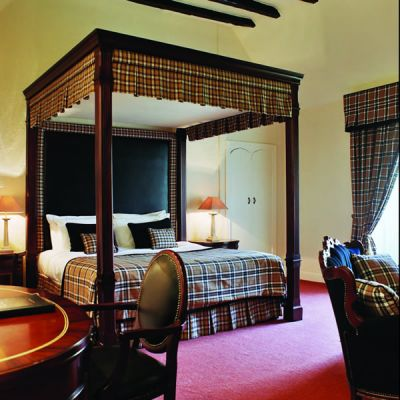

Many services are available to our guests. Any member of our staff can help you if you have any questions about our services. You can also pick up a services brochure in the lobby 24/7 or request an email version. On this page we feature two of our most popular services, room service and the spa.
Room Service
 Room service is available from 6am to midnight daily. Breakfast choices include unique gourmet items, while lunch choices include tantalizing salads, tasty sandwiches, and made-to-order pizzas. Guests opting to dine in their room at night may choose from fresh seafood, pasta, a wide variety of salads, or steaks. A complete list of appetizers is also available. Just check your in room menu to see all of the tastey items we have to offer, then dial 7 on your room telephone and tell us what's your pleasure -- we'll take it from there! We also can serve a variety of wines and other spirits directly to your room from noon until midnight seven days a week (no drinking before noon, you know.) We'll even supply the corkscrew and the glasses!
Awards
Our room service was given the Hotel Eater's coveted "Yummy" award in both 2005 and 2006 so it has to be good. (The guy that brings the food to the room tripped and spilled the food all over the place in 2006 so we lost the award that year. Don't worry though, we fired him.)
The Spa
The Spa, created for resort guests and locals alike, is designed to incorporate the style and traditions of Indonesia and promote health (body), peace (soul) and relaxation (spirit). The indoor treatment suites offer a private sanctuary where spa guests are lulled into meditative serenity before the treatments begin. Several different types of massage treatments are available, depending upon the expertise of our staff at the time. We have chacuziis and both wet and dry steam rooms in both the men's and women's locker rooms to enjoy before and/or after your spa treatment. There is no time limit placed on your enjoyment. The Spa operates daily from 8am - 8pm. Talk about getting away! For appointments or more information, just call the front desk.
Awards
Although our spa hasn't won any official awards yet, we think it deserves one. So if we keep getting snubbed by the official independent organization that gives the hotel spa awards, we may have start donating some money to them and if that doesn't work, maybe we'll just give ourselves an award. Stay tuned.